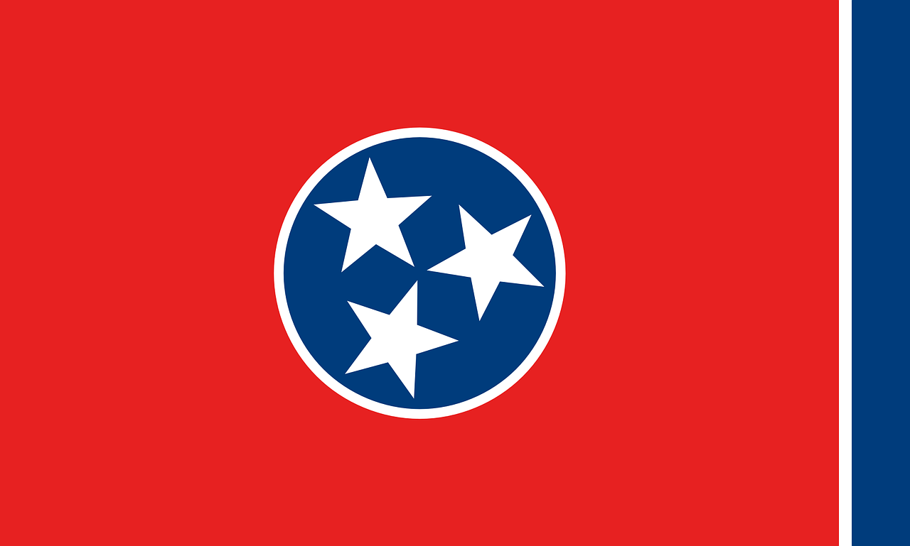
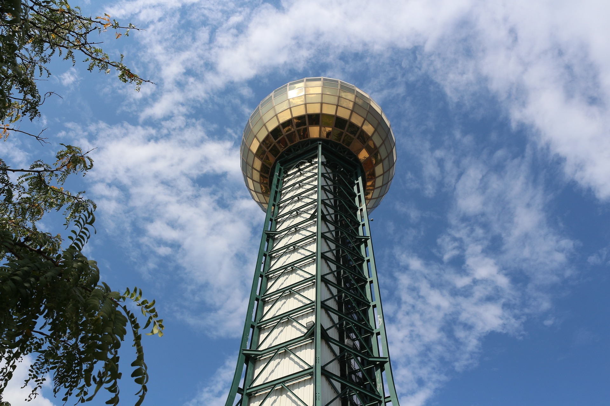
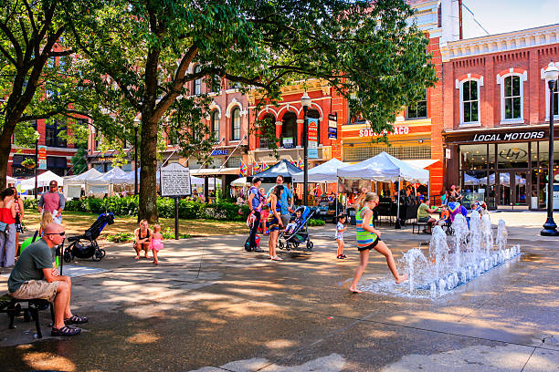
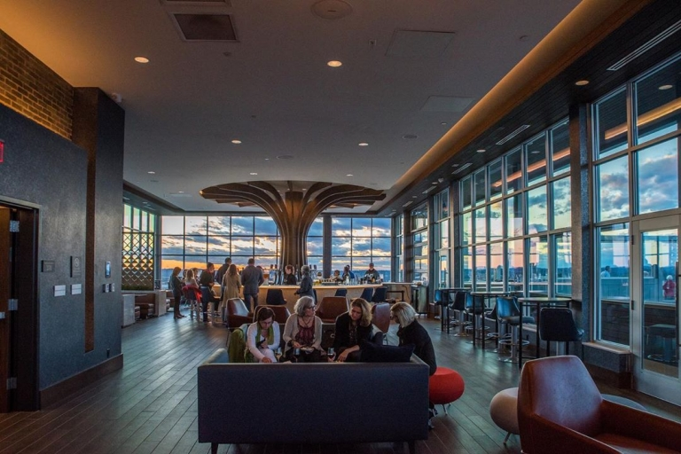

Travel
The Sunsphere is a great place to visit on your trip to Knoxville. Whether you are entering the inside
or just going through the park, the sunsphere will make your realize the sense of community in the town of Knoxville.
Sitting inside the World's Fair Park, the sunsphere was built in 1982 for the World's Fair that took place in Knoxville.
This monument marks the culture that is associated with this beautiful town, making this a must-see destination.
The historic Market Square neighborhood in Downtown Knoxville is a great place to visit on a day out.
With plenty of food and drink options, this makes the perfect place for lunch or dinner.
There are also plenty of options for family and kids and even dog friendly. During the winter, there is a famous ice rink held there as well.
This location can be a bit busy at times, especially during the winter when the rink is out. Despite the potential heavy crowds,
it is still something you do not want to miss.
The Embassy Suites hotel located in Downtown Knoxville contains access to a rooftop bar
called the Radius Rooftop Lounge. This rooftop has access to an indoor lounging and bar area, which is perfect
for those who love drinks and want to get a cocktail. During the day, the pool and hot tub outside are open and can be used by guests.
After sunset, the lounge becomes adult only with a strict clothing policy though, so you may want to plan ahead for that. Even if you do not
want any drinks, the view you get to witness from that height is very much worth it.

The Landing Greenway alongside the Tennessee River is a must-see spot in Knoxville. Whether you are wanting to get exercise
in through walking, jogging, or biking or are just wanting to go on a fun stroll, this is the perfect spot. The greenway is a great family destination too, with plenty of fun things for kids to enjoy including
swings, some fun history, and waterfalls. As an added bonus, the greenway is right next to the Calhounds restaurant, which is a great place to get some dinnner
while also having a great view.

Gay street in Downtown Knoxville is the perfect destination for the shopping lovers. This long street offers
every form of shopping that one could desire. From ice cream at Cruze Farms to food to bowling and cocktails at Maple
Hall or from touristy Southern shopping at Mast General Store to numerous local boutiques, there is a store for everyone.
With many forms of food and drinks, this is the perfect place for someone who loves shopping or
is forced to be there because of their partner. This street has some of the most iconic
Knoxville spots like the Bijou Theater or the classic light up Tennessee sign. Even more, this road leads
to the historic Old City district with even more shopping and local breweries. On the weekends, this can be a pretty busy spot, but it is
definitely still worth it.
After spending my entire life in Tennessee, I can definitely say that there is a lot to offer here.
I have now spent my entire four years of my college career right here in Knoxville, TN.
You may often hear of the bad parts of Tennessee or even rough areas of Knoxville, but I can assure you
this area is one of the nicest towns in all of Tennessee. Here are five of my favorite suggestions to
experience in Knoxville. Let me know of some of your favorites in the comments below!
1. Sunsphere
This photo of the sunsphere was taken using the Sony A7rIII on a 50mm lens using a f/1.8 aperture and a shutter speed of 1/800.
Price: Free
Difficulty: Easy with low levels of crowds
2. Market Square
This photo of the famous Market Square neighborhood was taken using the Sony A7rIII on a 35mm lens using a f/1.8 aperture and a shutter speed of 1/1000.
Price: Free
Difficulty: Can be busy on weekends during brunch time or during events
3. Embassy Suites Rooftop
This photo of the Radius Rooftop Lounge using the Sony A7rIII on a 35mm lens using a f/1.8 aperture and a shutter speed of 1/1000.
Price: Free
Difficulty: Can be busy on weekends in the night or during events
4. Tennessee River and Riverside Landing Greenway
This video of the Radius the Tennessee River was captured using the Sony A7rIII on a 35mm lens using a f/1.8 aperture and a shutter speed of 1/300.
Price: Free
Difficulty: Can be busy during UTK football games
5. Gay Street Shopping
This video of the Gay St. block was captured using the FUJIFILM X-T20 on a 16mm lens using a f/5.6 aperture and a shutter speed of 1/250.
Price: Free
Difficulty: Can be busy on the weekends
4 comments
Charles KateMay 16, 2020
These are some great tips! I can't wait to go to Knoxville later this month! Any tips on what to eat there?
Thirteen ManMay 20, 2020
Oh I am so excited for you! I would highly reccomend the Market Square area. There are many good restaurants there, such as Cafe4 or Tomato Head that would be worth a trip!
Belisimo MamaMay 16, 2020
I would also highly recommend going to the Art Museum downtown, as there are really nice exhibits there.
Jackson AblesMay 22, 2020
I just went there last month. I would also highly reccomend!!